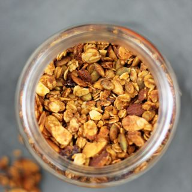

granola de zapallo
Ingredientes
- 3 tazas de avena tradicional
- 1 taza de nueces o almendras enteras
- 1/2 taza de semillas de zapallo
- 1/2 cucharadita de sal
- 1/2 cucharadita de canela
- 1/4 taza de aceite de coco
- 1/3 taza de maple syrup o miel
- 1/3 taza de puré de zapallo
- 3 cucharadas de azúcar morena
- 1 cucharadita de esencia de vainilla
- 1 taza de cranberries secas o puede usar pasas
Preparacion
- Precalentar el horno a 320 F° (160°C).
- En un bol grande mezclar la avena, nueces o almendras, semillas de zapallo, especias y sal.
- Luego en una olla colocar el aceite de coco, syrup o miel, puré de zapallo, azúcar y vainilla. Dejar hasta que este todo derretido.
- Luego colocar la mezcla en una máquina para hacer helado y seguir la intrucciones del fabricante.
- EColocar esta mezcla en la otra de los ingredientes secos. Unir bien y llevar a una bandeja y llevar al horno por unos 20 minutos. Luego retira del horno , revuelve toda la granola y la vuelve a llevar al horno por unos 20 minutos más.
- Luego dejar enfríar y mezclar con las cranberries o pasas.